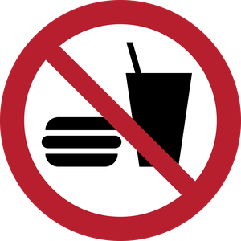

Food and DrinkAccording to the Food/Drink section of the Lab Safety Handbook:
- Eating, drinking, smoking, and storage of food or drink are prohibited anywhere in the laboratory, including in laboratory refrigerators.
- This applies to the whole lab space, not just areas near hazards — food and drink left in a lab can absorb vapours even sealed and stored away from chemicals.
- Always wash hands before eating or taking a coffee break.
- Laboratory glassware, microwaves, and utensils that have been used for laboratory operations must never be used to consume food or drink.